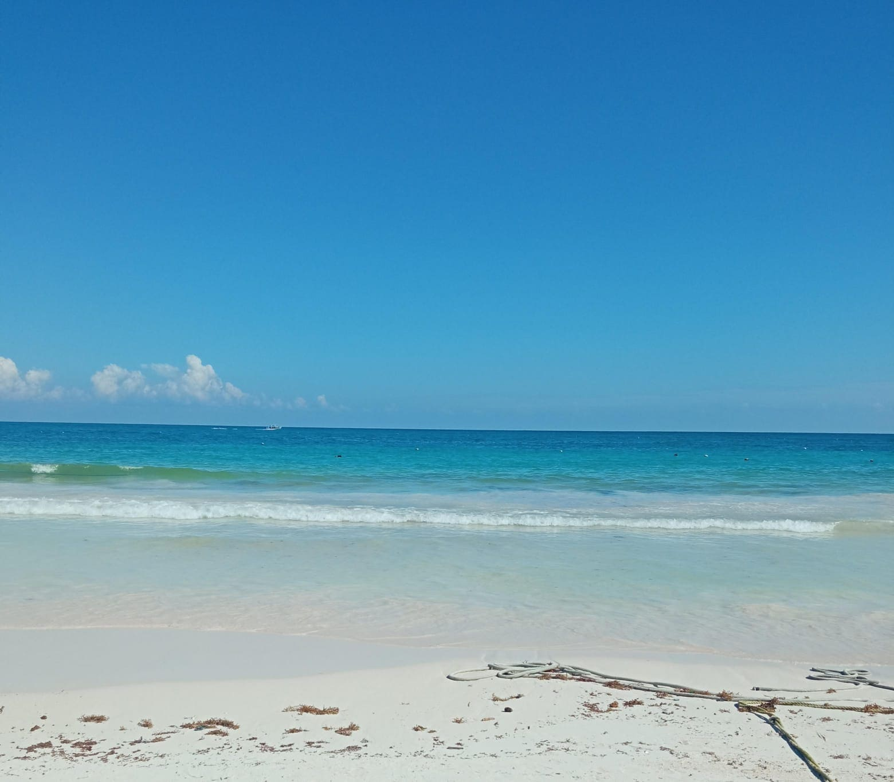
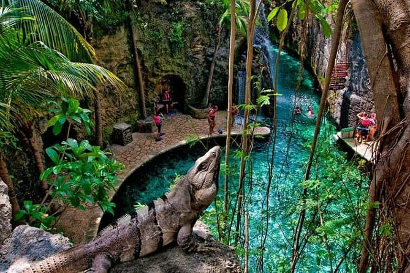
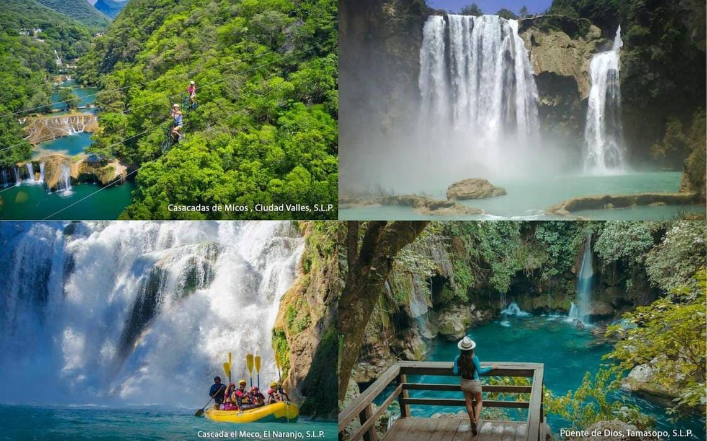
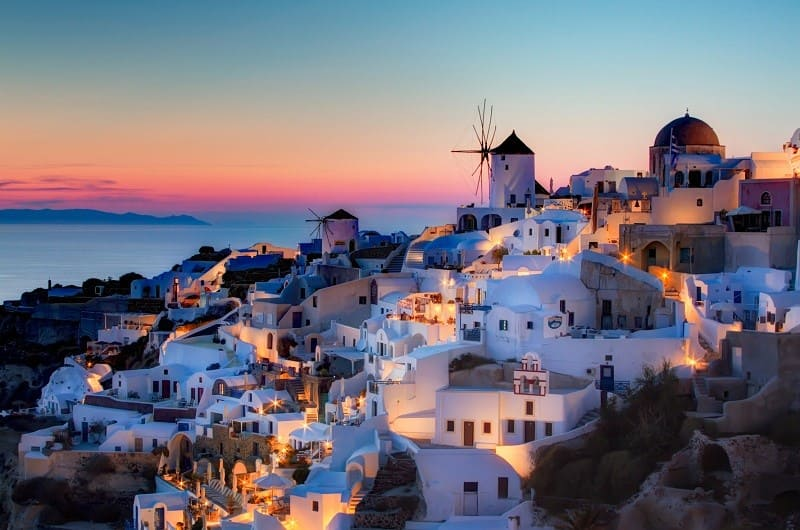
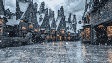

La playa
Ir a la playa siempre me llena de una sensación de calma y libertad. El simple hecho de caminar por la orilla, sintiendo la arena tibia bajo mis pies, me hace desconectar de todo. El sonido constante de las olas rompiendo suavemente contra la costa parece borrar cualquier pensamiento preocupante. Cada vez que voy a la playa, encuentro un espacio para ser libre y divertirme. Me gusta zambullirme en el agua, sentir el frío del mar en mi piel y flotar sin preocupaciones. Ir a la playa siempre me deja con una sensación de paz, como si la naturaleza me recordara lo sencillo y maravilloso que es vivir.
Lugares que me gustaría visitar
Xcaret
Visitar Xcaret es una excelente oportunidad para conocer la riqueza natural y cultural de México en un solo lugar. Este parque eco-arqueológico, ubicado en la Riviera Maya, ofrece una mezcla única de experiencias inmersivas que permiten descubrir la biodiversidad de la región, desde ríos subterráneos hasta playas de aguas cristalinas. Los visitantes pueden explorar la fauna y flora local, admirando especies como guacamayas, tortugas marinas y flamencos. Además, el parque promueve el cuidado del medio ambiente a través de sus programas de conservación, lo que añade una dimensión educativa a la experiencia. Por otro lado, Xcaret es un homenaje a la historia y las tradiciones mexicanas. El parque cuenta con espectáculos que celebran la cultura maya, así como festividades emblemáticas como el Día de Muertos. Estas representaciones artísticas ofrecen una ventana a las raíces de México, permitiendo a los visitantes comprender y apreciar las costumbres locales. Además, Xcaret combina lo mejor de la gastronomía tradicional mexicana con actividades recreativas para todas las edades, lo que lo convierte en un destino ideal para familias, parejas o grupos de amigos que desean vivir unas vacaciones enriquecedoras y llenas de aventuras.
La Huasteca Potosina
Visitar la Huasteca Potosina es una excelente opción para quienes buscan sumergirse en paisajes naturales espectaculares y experiencias llenas de aventura. Esta región en el estado de San Luis Potosí es famosa por su exuberante vegetación, cascadas imponentes y ríos de aguas cristalinas. Lugares como la Cascada de Tamul o el Sótano de las Golondrinas permiten a los visitantes admirar la grandeza de la naturaleza. Además, las actividades al aire libre como el rafting, senderismo, y el rappel en las cascadas ofrecen una experiencia emocionante para los amantes de la aventura.
Pero no solo la naturaleza deslumbra en la Huasteca Potosina, también hay una profunda riqueza cultural. Los pueblos de la región conservan tradiciones indígenas huastecas que se reflejan en su música, danza y gastronomía. Visitar estas comunidades es una oportunidad para conocer de cerca las costumbres locales y disfrutar de la hospitalidad de su gente. La combinación de su espectacular entorno natural y su patrimonio cultural convierte a la Huasteca Potosina en un destino ideal para quienes buscan una experiencia de viaje única y auténtica.
Santorini
Visitar Santorini es una experiencia inolvidable por su singular belleza y encanto. Este destino griego, famoso por sus casas encaladas con cúpulas azules, ofrece algunas de las vistas más espectaculares del mundo. Desde los acantilados de las ciudades de Oia y Fira, se puede admirar la caldera volcánica, una vista que parece sacada de una postal. Los atardeceres en Santorini son legendarios, atrayendo a miles de viajeros que buscan ver cómo el sol se sumerge lentamente en el mar Egeo, tiñendo el cielo de colores cálidos y dorados. La paz y serenidad que ofrece este espectáculo natural hacen de Santorini un destino perfecto para quienes buscan desconectar y disfrutar de la belleza escénica.
Además de sus paisajes, Santorini es un lugar con una rica historia y una vibrante cultura. Las ruinas de la antigua ciudad de Akrotiri ofrecen una ventana al pasado, mostrando la civilización minoica que habitó la isla hace miles de años. Los visitantes también pueden explorar viñedos locales, donde se producen algunos de los mejores vinos de Grecia, gracias a su suelo volcánico único. La gastronomía en Santorini es otro de sus grandes atractivos, con platos tradicionales que combinan productos frescos del mar y la tierra. En resumen, Santorini no solo deslumbra por su belleza, sino que ofrece una mezcla perfecta de historia, cultura y placeres culinarios.
El lugar de mis sueños
The Wizarding World of Harry Potter
Ir al parque temático de Harry Potter sería un sueño hecho realidad para mí, alguien que ha amado la saga desde que tiene 10 años pero nunca ha tenido la oportunidad de estar allí. Desde el momento en que cruzara las puertas y viera por primera vez el castillo de Hogwarts alzarse imponente frente a mí, sentiría que todo lo que he imaginado mientras veía las películas se hace tangible. Caminar por Hogsmeade, con sus techos nevados y las tiendas como Honeydukes y Ollivanders, sería como entrar a las películas que me han acompañado durante tantos años.
Lo que más me emocionaría sería vivir las experiencias que he soñado desde que conocí el mundo mágico. Imagino la sensación de subirme a una escoba en las montañas rusas de Quidditch o recorrer los pasillos del castillo de Hogwarts, donde cada detalle está pensado para transportarme al universo de Harry Potter. Incluso probar una cerveza de mantequilla o una rana de chocolate sería como darle un sabor real a todo lo que he visto en la pantalla. Ir al parque temático no sería solo una visita, sino la realización de un deseo de toda la vida, la oportunidad de sentir que, al menos por un día, formo parte del mundo mágico que siempre he querido conocer.
